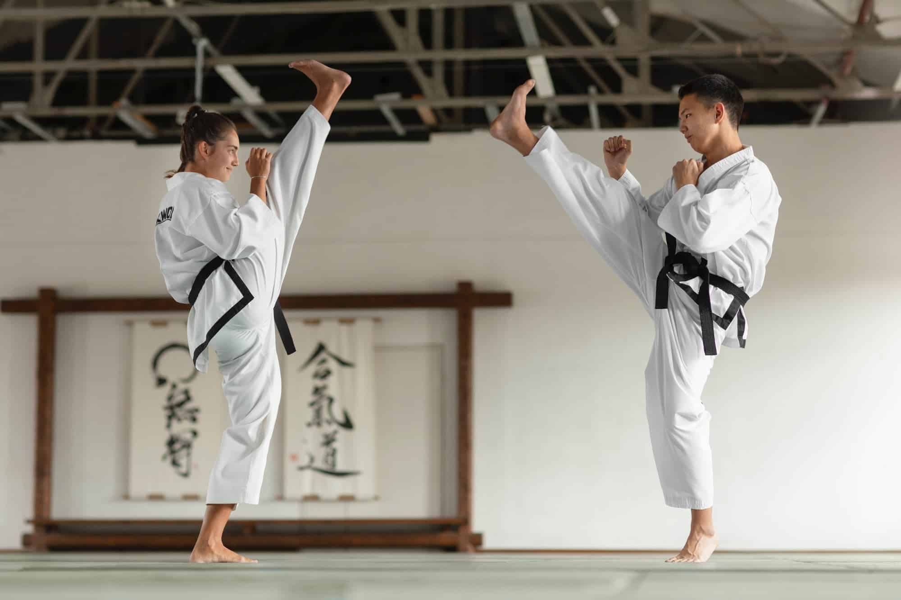
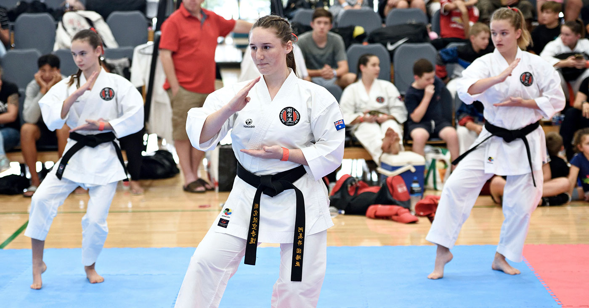
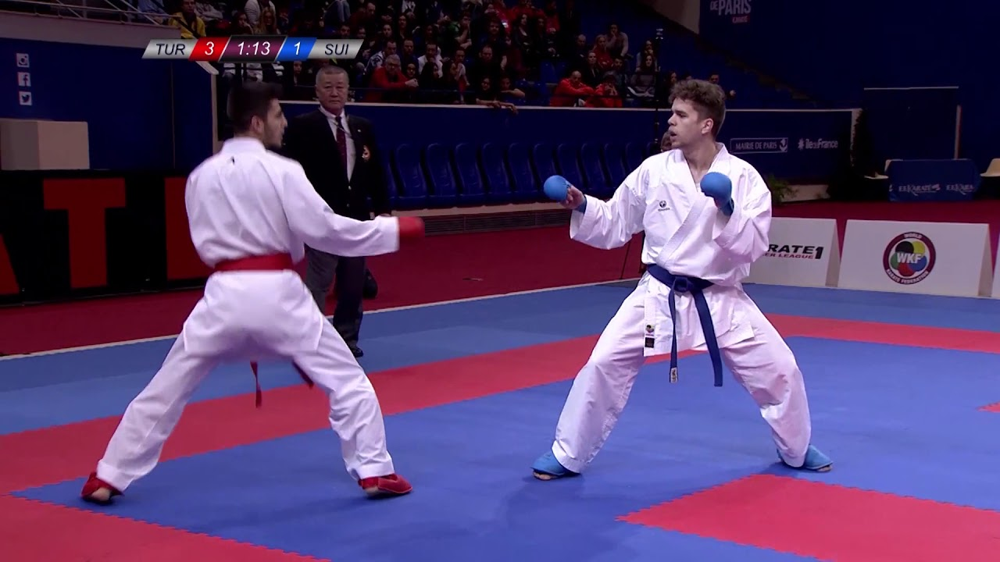

Como funcionam as competições?
As competições, como na maioria das outras modalidades de lutas, funcionam dividindo os competidores em diversas categorias de acordo com as suas idades, graduações, pesos (quando em caso de combate) e gêneros. Como essas divisões serão organizadas dependerá da federação e da própria instituição que está organizando a competição. Por exemplo, pode haver categorias absolutas, nas quais não há distinção de peso ou graduação.
Estas divisões em categorias se dão para unir, em cada uma delas, pessoas que tenham idade, biotipo e graduação mais ou menos semelhantes, para deixar as disputas mais justas.
No ato da inscrição, o competidor já sabe em que categoria irá competir e quais serão as exigências daquela competição (fardamento exigido, equipamentos, etc).

Modalidades
Kata
As competições de Kata podem ser individuais ou em equipe (geralmente de três karatecas) e as categorias geralmente são divididas entre os gêneros feminino e masculino, faixas etárias e em níveis de graduação.
Há vários quesitos que os árbitros irão analisar para saber quem é o vencedor em uma competição de Kata, como base, kime, velocidade e tempo de Kata. E se a competição for em equipe, soma-se a tudo isso a sincronia entre os indivíduos da equipe e também a aplicação do Kata (Bunkai).

Kumite (Shiai Kumite)
Dependendo dos estilos e federações, estas competições podem variar bastante. Podem ser, como na maioria, por pontuação, mas o número máximo da pontuação dependerá da federação e da competição em si, como também podem ser no estilo boxe, por exemplo, vence quem fizer o nocaute ou quem os árbitros julgarem ter lutado melhor ao final do tempo ou rounds estipulados. Os dois tipos de competição, no entanto, possuem limitação de tempo para cada combate.
A luta por pontuação acaba quando a pontuação determinada ao início da luta for atingida. Agora caso o tempo de luta acabe e esta esteja empatada, há um desempate. As regras desse desempate, como as demais, variam de federação para federação, podendo ser outra luta mais curta que a primeira ou até mesmo ganhar quem fizer o primeiro ponto.
